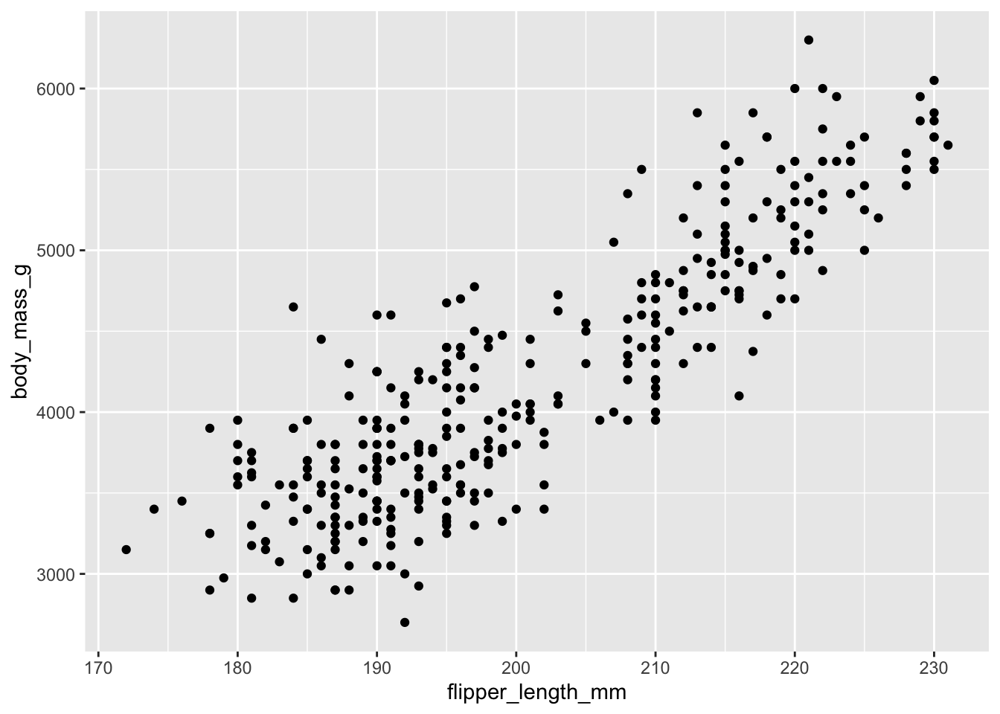
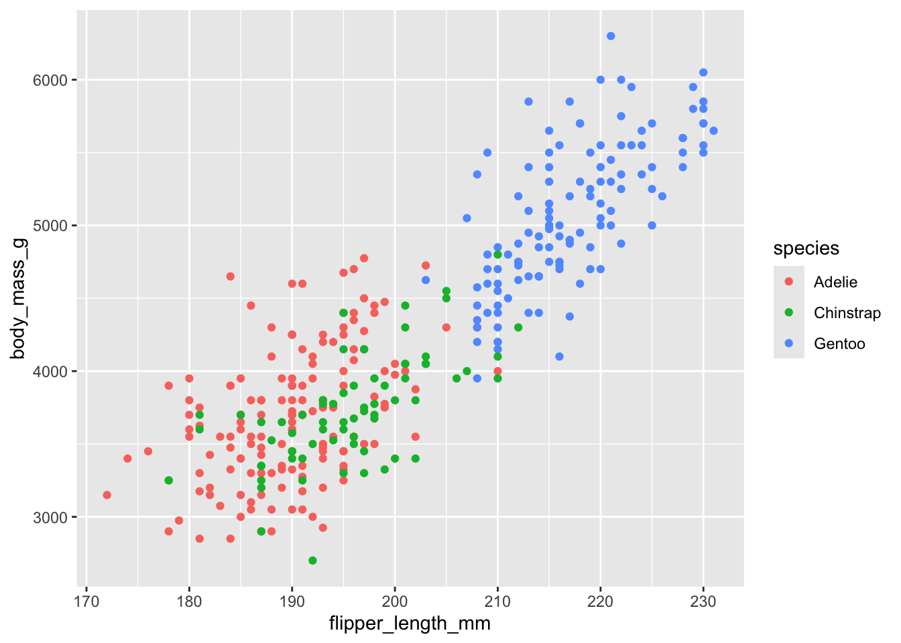
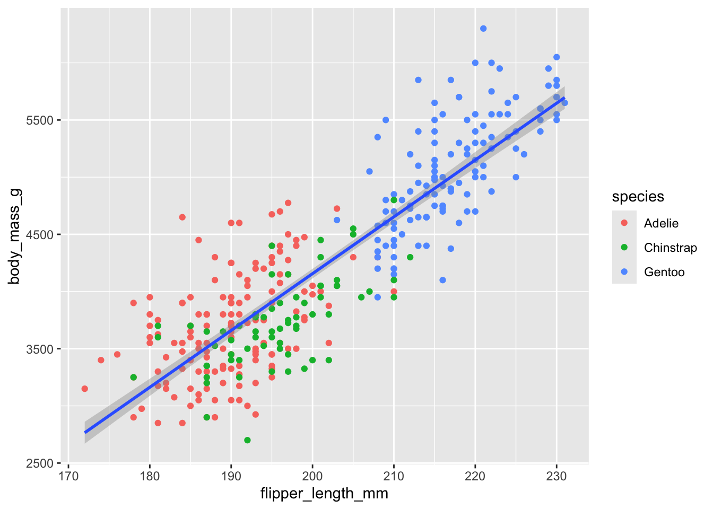
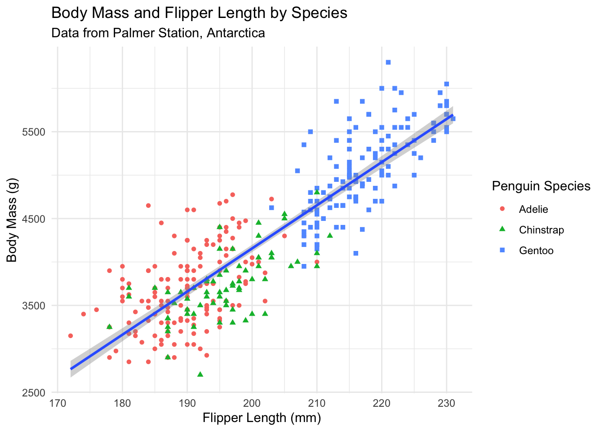
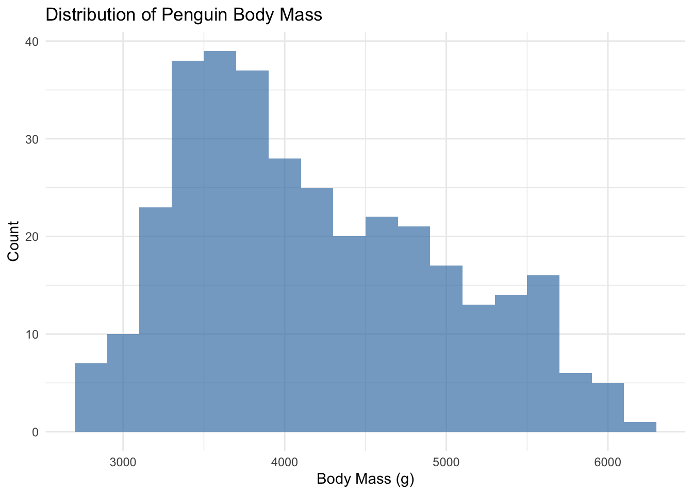
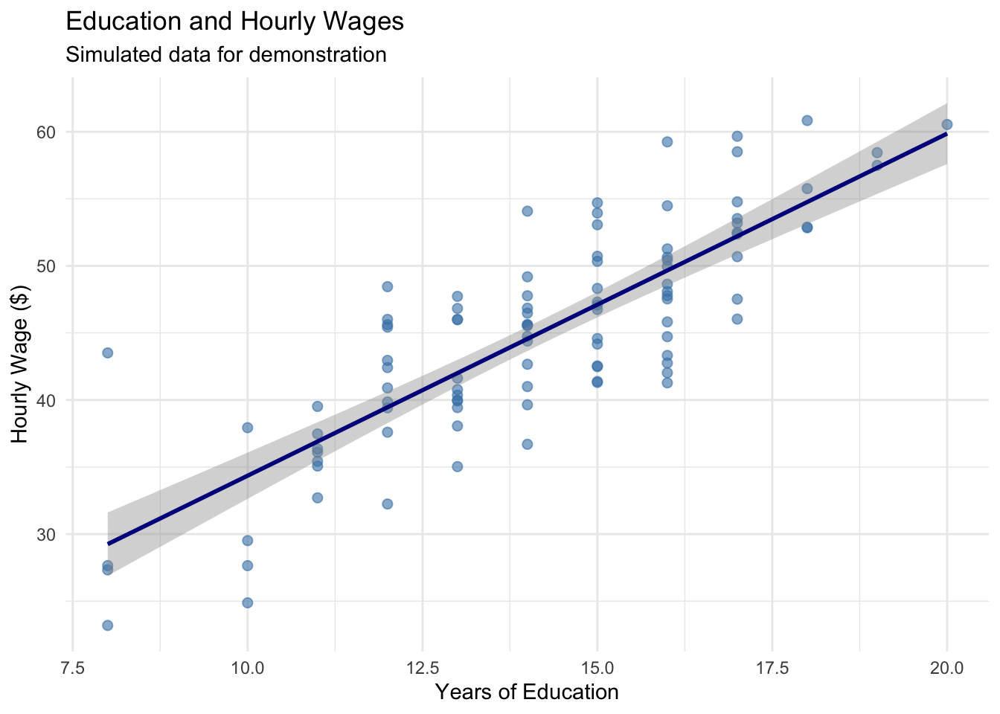
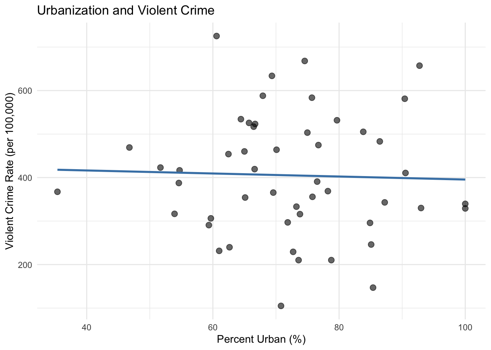

Before we dive into sophisticated econometric methods, we need to establish good habits for working with data. Even the most advanced statistical techniques cannot rescue an analysis built on flawed or misunderstood data. This chapter focuses on the essential first steps: understanding our data through descriptive statistics and visualization, and documenting our work so that others (including our future selves) can verify and build upon it.
2.1 When Good Economists Use Bad Data
In 2010, economists Carmen Reinhart and Kenneth Rogoff published influential research on government debt and economic growth. Their analysis covered many annual observations from countries around the world, and their key finding was striking: when a country’s government debt exceeded 90% of GDP, economic growth dropped dramatically.
The policy implications seemed clear. Governments should be cautious about using deficit spending to fight unemployment. This finding influenced policy debates across the world during a period when many countries were considering how aggressively to respond to the Great Recession. There was one problem with this analysis, however: the data didn’t quite say what Reinhart and Rogoff thought it did.
In 2014, a graduate student named Thomas Herndon was trying to replicate their results for a homework assignment. He couldn’t get the numbers to match. After obtaining the original Excel spreadsheet from Reinhart and Rogoff, Herndon and his advisors discovered three issues: some observations had been mistakenly excluded from key calculations, observations were weighed strangely, and some cells in the Excel spreadsheet had simply not been included in the formula calculating the average.
When the data were corrected, the dramatic “cliff” in economic growth disappeared. While growth did decline somewhat as debt increased, the relationship was much more gradual than originally reported. There was no “cliff” that was so central to the original analysis. The corrected analysis told a very different policy story.
This experience teaches us that good data practices are one of the most fundamental tenants of credible research. No amount of sophisticated econometric technique can compensate for errors and misunderstandings in the underlying data. This chapter introduces practices that help us avoid such problems, and will be useful throughout your career as an econometrician.
2.2 Know Your Data
The first rule of data analysis is simple: know your data. This means examining it carefully before conducting any formal analysis. We want to understand what we’re working with, detect potential errors, and develop intuition about the relationships we might find.
2.2.1 Descriptive Statistics
For every variable in our dataset, we should know several key statistics: the number of observations, the mean, the standard deviation, and the minimum and maximum values (refer to Appendix B for a review of what exactly these calculations mean). These statistics give us a feel for the data and help us spot problems.
Let’s look at a simple example. Suppose we’re studying the relationship between education and wages. Here’s simulated data for 100 individuals:
Code
# Set seed for reproducibilityset.seed(42)# Generate simulated wage and education datan <-100education <-round(rnorm(n, mean =14, sd =2.5))education <-pmax(8, pmin(education, 20)) # Constrain between 8 and 20 years# Generate wages with some relationship to educationwages <-10+2.5* education +rnorm(n, mean =0, sd =5)wages <-pmax(wages, 8) # Minimum wage floor# Create age variableage <-round(rnorm(n, mean =35, sd =10))age <-pmax(age, 22) # Minimum age# Create a tibblewage_data <-tibble(id =1:n,education = education,wage = wages,age = age)# Display descriptive statisticsdatasummary_skim(wage_data |>select(education, wage, age),title ="Descriptive Statistics: Education and Wages",histogram =FALSE)
Unique
Missing Pct.
Mean
SD
Min
Median
Max
education
12
0
14.1
2.6
8.0
14.0
20.0
wage
100
0
44.9
7.9
23.2
45.6
60.8
age
33
0
35.3
9.4
22.0
35.0
60.0
These statistics immediately tell us several things. We have 100 observations with no missing data (N = 100 for all variables). Education ranges from 8 to 20 years, with a mean around 14 years—this seems reasonable for a sample of working adults. Wages range from about $8 to $63 per hour, with substantial variation (standard deviation of about $10).
But what if our summary statistics looked like this instead?
Unique
Missing Pct.
Mean
SD
Min
Median
Max
education
13
0
13.9
3.2
-5.0
14.0
20.0
wage
100
0
52.8
80.9
23.2
45.6
850.0
age
34
0
37.0
19.0
22.0
35.0
200.0
Now we have a problem! The maximum wage of $850 per hour seems suspicious—is this real or a data entry error? The minimum education value of -5 years is impossible. And an age of 200 is clearly wrong. These obvious errors suggest we need to investigate our data more carefully.
2.2.2 Computing Descriptive Statistics in R
While summary tables like those above are useful for reports, you often need to calculate specific statistics yourself. R provides simple functions for all the common descriptive statistics.
2.2.2.1 Basic Summary Functions
The most commonly used functions for numeric variables are:
# Mean (average)mean(wage_data$wage)
[1] 44.91258
# Standard deviationsd(wage_data$wage)
[1] 7.9215
# Median (middle value)median(wage_data$wage)
[1] 45.60513
# Minimum and maximummin(wage_data$wage)
[1] 23.18942
max(wage_data$wage)
[1] 60.83585
You can also get several statistics at once using summary():
summary(wage_data$wage)
Min. 1st Qu. Median Mean 3rd Qu. Max.
23.19 40.26 45.61 44.91 50.36 60.84
2.2.2.2 Handling Missing Values
Real-world data often contains missing values, represented as NA in R. Most summary functions will return NA if the data contains any missing values:
# Create a vector with a missing valuewages_with_na <-c(15, 22, NA, 18, 25)mean(wages_with_na)
[1] NA
To calculate statistics while ignoring missing values, use the na.rm = TRUE argument:
mean(wages_with_na, na.rm =TRUE)
[1] 20
sd(wages_with_na, na.rm =TRUE)
[1] 4.396969
Always Check for Missing Data
Before calculating any statistics, check how many missing values you have. The sum(is.na()) function counts missing values:
sum(is.na(wages_with_na))
[1] 1
If a large proportion of observations are missing, your statistics may not be representative of the full sample.
2.2.2.3 Counting and Frequency Tables
For categorical variables, we want to count how many observations fall into each category. The count() function from the tidyverse makes this easy. We are also going to be using the pipe |> in order to string our data operations together like a sentence. For more info on the tidyverse and the pipe operator, refer to Appendix A.
First, let’s create some categorical variables to work with:
# Create categorical variables for demonstrationwage_data <- wage_data |>mutate(# College degree: 1 if 16+ years of educationcollege =ifelse(education >=16, 1, 0),# Age groupsage_group =case_when( age <30~"Under 30", age <45~"30-44",TRUE~"45+" ) )
Now we can count observations in each category:
# Count observations by college statuswage_data |>count(college)
# A tibble: 2 × 2
college n
<dbl> <int>
1 0 67
2 1 33
You can count by multiple variables to create cross-tabulations:
# Count by two variableswage_data |>count(college, age_group)
# A tibble: 6 × 3
college age_group n
<dbl> <chr> <int>
1 0 30-44 39
2 0 45+ 14
3 0 Under 30 14
4 1 30-44 12
5 1 45+ 5
6 1 Under 30 16
To add percentages, you can extend the count() output:
wage_data |>count(college) |>mutate(percent =100* n /sum(n))
# A tibble: 2 × 3
college n percent
<dbl> <int> <dbl>
1 0 67 67
2 1 33 33
2.2.2.4 Group-wise Statistics
Often we want to compare statistics across groups. The group_by() and summarize() functions work together for this:
# Calculate mean wage by college statuswage_data |>group_by(college) |>summarize(mean_wage =mean(wage),sd_wage =sd(wage),n =n() )
# A tibble: 2 × 4
college mean_wage sd_wage n
<dbl> <dbl> <dbl> <int>
1 0 41.7 6.92 67
2 1 51.4 5.57 33
This is incredibly useful for exploring how outcomes differ across groups—exactly what we’ll be doing in regression analysis.
# Compare wages across age groupswage_data |>group_by(age_group) |>summarize(mean_wage =mean(wage),median_wage =median(wage),min_wage =min(wage),max_wage =max(wage),count =n() )
Table 2.1: Common functions for descriptive statistics
Function
What it calculates
mean()
Average
sd()
Standard deviation
median()
Middle value
min(), max()
Minimum, maximum
sum()
Total
n()
Count (inside summarize)
count()
Frequency table
summary()
Multiple statistics at once
2.2.3 Examining Distributions
When a variable takes on a limited number of values, it’s helpful to examine the frequency distribution. Recall that we created a variable indicating whether someone has a college degree (1 = yes, 0 = no). Let’s look at its distribution:
# Create frequency tablewage_data |>count(college) |>mutate(percent = n /sum(n) *100) |> knitr::kable(col.names =c("College Degree", "Count", "Percent"),digits =1,caption ="Distribution of College Degree" )
Distribution of College Degree
College Degree
Count
Percent
0
67
67
1
33
33
This tells us that 29% of our sample has a college degree. But imagine our frequency table looked like this:
A Problematic Distribution
College Degree
Count
Percent
0
30
58.8
1
20
39.2
100
1
2.0
We have a value of 100 for the college degree variable. Either we have someone with 100 college degrees (unlikely), or—much more probably—we have a coding error. This is the kind of problem that descriptive statistics help us catch.
2.3 Visualizing Data
Numbers are useful, but graphs often reveal patterns and problems that summary statistics miss. Effective data visualization is both a diagnostic tool and a way to understand relationships in our data. In econometrics, we rely heavily on visualizations to explore data, diagnose problems, and communicate results.
Why Visualization Matters
A good data visualization translates complex data into a clear visual format, revealing patterns, trends, and relationships that would be difficult to see in tables of numbers. The goal is to tell an accurate and compelling story that allows your audience to quickly grasp key insights.
2.3.1 The Grammar of Graphics: ggplot2
We’ll use ggplot2 (part of the tidyverse) for creating visualizations. The “gg” stands for “grammar of graphics”—a systematic way of thinking about how to build plots.
Every ggplot has two main components:
The scaffolding: titles, axis labels, legends, sources
The content: the actual data encoded as visual elements (points, lines, bars, etc.)
The key insight of ggplot2 is that we build plots layer by layer, adding elements one at a time until we have a complete visualization.
2.3.2 Getting Started: The Palmer Penguins
Let’s use real data to learn ggplot2. The Palmer Penguins dataset contains measurements of 344 penguins from three species collected near Palmer Station, Antarctica.
# Load the penguins datalibrary(palmerpenguins)# Take a look at the dataglimpse(penguins)
The data includes species, island location, bill measurements, flipper length, body mass, sex, and year of observation.
2.3.3 Building a Plot: Step by Step
Let’s answer a research question: Do penguins with longer flippers weigh more?
We start by creating an empty plot object:
ggplot(data = penguins)
Figure 2.1: An empty ggplot object with no layers.
This creates the plotting area but doesn’t show any data yet.
Now let’s add a layer with points. We need to specify: - The geometry (what shape): geom_point() for a scatterplot - The aesthetic mapping (which variables go where): aes(x = ..., y = ...)
ggplot(data = penguins) +geom_point(aes(x = flipper_length_mm, y = body_mass_g))
Figure 2.2: A basic scatterplot showing flipper length versus body mass.

The plot clearly shows a positive relationship: penguins with longer flippers tend to be heavier.
2.3.4 Adding More Information: Color and Shape
But wait—could this relationship be driven by different penguin species? Maybe larger species have both longer flippers and greater body mass. We can encode species information using color:
ggplot(data = penguins) +geom_point(aes(x = flipper_length_mm, y = body_mass_g, color = species))
Figure 2.3: Scatterplot with species indicated by color. The positive relationship holds within each species.

Now we can see that:
Gentoo penguins (blue) are generally larger
The positive relationship between flipper length and body mass exists within each species
This suggests the relationship isn’t just due to species differences
2.3.5 Adding a Line-of-Best Fit
Let’s add a line-of-best fit (i.e., a regression line) to visualize the overall trend. This requires a new layer (not a new aesthetic):
ggplot(data = penguins) +geom_point(aes(x = flipper_length_mm, y = body_mass_g, color = species)) +geom_smooth(aes(x = flipper_length_mm, y = body_mass_g), method ="lm")
Figure 2.4: Scatterplot with regression line. The blue line shows the estimated linear relationship.

The geom_smooth() layer adds a line of best fit using linear regression (method = "lm").
2.3.6 Proper Labeling
Our plot conveys information well, but the axis labels and title need improvement. Good labels are essential for clear communication:
ggplot(data = penguins) +geom_point(aes(x = flipper_length_mm, y = body_mass_g, color = species, shape = species)) +geom_smooth(aes(x = flipper_length_mm, y = body_mass_g), method ="lm") +labs(title ="Body Mass and Flipper Length by Species",subtitle ="Data from Palmer Station, Antarctica",x ="Flipper Length (mm)",y ="Body Mass (g)",color ="Penguin Species",shape ="Penguin Species" ) +theme_minimal()
Figure 2.5: A properly labeled scatterplot with clear titles and axis labels.

Notice how much clearer this is! The plot now includes:
A descriptive title
Proper axis labels with units
A data source in the subtitle
Readable legend labels
2.3.7 Histograms for Distributions
Histograms show the distribution of a continuous variable by dividing it into bins:
ggplot(penguins) +geom_histogram(aes(x = body_mass_g), binwidth =200, fill ="steelblue", alpha =0.7) +labs(title ="Distribution of Penguin Body Mass",x ="Body Mass (g)",y ="Count" ) +theme_minimal()
Figure 2.6: Histogram showing the distribution of penguin body mass.

The binwidth parameter controls how wide each bar is. Smaller binwidths create more bars and show more detail.
2.3.8 A Simple Example with Our Wage Data
Let’s apply these principles to our wage and education data:
ggplot(wage_data, aes(x = education, y = wage)) +geom_point(alpha =0.6, size =2, color ="steelblue") +geom_smooth(method ="lm", se =TRUE, color ="darkblue") +labs(title ="Education and Hourly Wages",subtitle ="Simulated data for demonstration",x ="Years of Education",y ="Hourly Wage ($)" ) +theme_minimal()
Figure 2.7: The relationship between education and wages with proper labeling and styling.

Building Intuition
The layered approach of ggplot2 mirrors how we think about data analysis: - Start with the data - Add visual representations - Refine with labels and formatting Experiment with different geometries, aesthetics, and layers to find the visualization that best tells your data’s story.
2.4 Replication: The Foundation of Credible Research
Science depends on replication. If other researchers cannot reproduce our results using the information we provide, then our findings cannot be verified or built upon. This is not just an abstract principle—it’s a practical necessity.
The Replication Standard
Research meets the replication standard when an independent researcher can exactly duplicate the results using only the information provided.
2.4.1 Why Replication Matters
Replication serves several crucial purposes. First, it allows others to check our work. The Reinhart-Rogoff example shows why this matters: only because they shared their data could Thomas Herndon discover the errors. Without replication materials, the mistakes might never have been found.
Second, replication enables others to probe our analysis. Statistical results often hinge on seemingly small decisions—which observations to include, how to handle missing data, which variables to control for. Skeptical readers (which should be everyone!) want to see whether reasonable alternative approaches produce similar conclusions. If a certain choice substantially changes our results, we need to pay attention.
Third, committing to a replication standard keeps our work honest. If we know others will check our work, we’re less likely to make choices based on getting the “right” answer rather than statistical merit.
Finally, replication helps our future selves. Even a moderately complex project can involve hundreds of decisions over weeks or months. What seemed obvious at the time can become completely opaque later. Good documentation means we can return to a project after a break and immediately understand what we did.
2.4.2 What Makes Good Replication Materials?
Effective replication files have two components: a codebook that documents the data, and analysis code that shows exactly how results were produced.
The codebook describes where each variable comes from and any transformations applied. For example:
Variable name: wage
Description: Hourly wage in dollars, calculated as annual salary divided by hours worked in past year
Source: National Longitudinal Survey of Youth, 1996 wave
Notes: Wages above $200/hour were excluded as likely data errors
The analysis code shows the exact steps used to produce each result. This means providing the actual R code, not just descriptions of what we did. And crucially, the code should include comments explaining why we made certain choices:
# Estimate relationship between education and wages# We control for age because it affects both education and wages# (older workers have had more time to complete education and gain experience)model <-lm(wage ~ education + age, data = wage_data)summary(model)
2.4.3 Good Coding Practices
As we write code for our analysis, several practices make our work easier to understand and verify:
Use descriptive variable names. Compare x1 versus years_education—the second is much clearer.
Comment extensively. Explain what each section of code does and why you made certain choices. Your future self will thank you.
Organize your code logically. Start with data loading and cleaning, then move to analysis, then to creating tables and figures.
Make your code reproducible. Use set.seed() before any random operations so results don’t change each time you run the code.
Here’s an example of well-documented code:
# =============================================================================# Analysis of Education and Wages# Author: Your Name# Date: December 2024# =============================================================================# Load required packageslibrary(tidyverse)# Set seed for reproducibilityset.seed(42)# -----------------------------------------------------------------------------# 1. LOAD AND CLEAN DATA# -----------------------------------------------------------------------------# Load data from National Longitudinal Survey# Downloaded from: https://www.nlsinfo.org/content/cohorts/nlsy79# Download date: December 1, 2024wage_data <-read_csv("nlsy_wages.csv")# Remove observations with missing wage data# This affects 23 observations (2.3% of sample)wage_data <- wage_data |>filter(!is.na(wage))# Create college degree indicator# Defined as 16+ years of education (bachelor's degree)wage_data <- wage_data |>mutate(college =ifelse(education >=16, 1, 0))# -----------------------------------------------------------------------------# 2. DESCRIPTIVE STATISTICS# -----------------------------------------------------------------------------# Summary statistics for main variablessummary(wage_data |>select(wage, education, age))# -----------------------------------------------------------------------------# 3. MAIN ANALYSIS# -----------------------------------------------------------------------------# Estimate basic relationship between education and wages# Simple regression without controlsmodel1 <-lm(wage ~ education, data = wage_data)# Add age as control variable# Age affects both education completion and wage levelsmodel2 <-lm(wage ~ education + age, data = wage_data)
2.5 A Quick Example: State Crime Data
Let’s practice these principles with a small example. We’ll look at violent crime rates across U.S. states and potential correlates.
Code
# Create simulated state crime data for demonstrationset.seed(123)n_states <-50state_data <-tibble(state = state.abb,violent_crime =rnorm(n_states, mean =400, sd =150),percent_urban =rnorm(n_states, mean =70, sd =15),percent_poverty =rnorm(n_states, mean =14, sd =3)) |>mutate(violent_crime =pmax(violent_crime, 100), # Keep positivepercent_urban =pmax(20, pmin(percent_urban, 100)), # Constrain to 0-100percent_poverty =pmax(8, pmin(percent_poverty, 22)) # Reasonable range )# Display descriptive statisticsdatasummary_skim(state_data |>select(-state),title ="State Crime Data: Descriptive Statistics",histogram =FALSE)
Unique
Missing Pct.
Mean
SD
Min
Median
Max
violent_crime
50
0
405.2
138.9
105.0
389.1
725.3
percent_urban
49
0
72.1
13.4
35.4
72.3
100.0
percent_poverty
50
0
13.2
3.0
8.0
13.1
20.3
The descriptive statistics look reasonable. Crime rates range from about 150 to 750 per 100,000 people. The urbanization variable is measured on a 0-100 scale, while poverty is measured as a percentage (8% to 22%). Understanding these scales is important for interpreting results.
Now let’s visualize the relationship between urbanization and crime:
Code
ggplot(state_data, aes(x = percent_urban, y = violent_crime)) +geom_point(alpha =0.6, size =2.5) +geom_smooth(method ="lm", se =FALSE, color ="steelblue") +labs(x ="Percent Urban (%)",y ="Violent Crime Rate (per 100,000)",title ="Urbanization and Violent Crime" ) +theme_minimal()
Figure 2.8: Relationship between urbanization and violent crime rates across U.S. states.

The scatterplot suggests a positive relationship: more urbanized states tend to have higher violent crime rates. But this is just correlation, not causation. Many factors differ between urban and rural states beyond just population density, and any of these could be driving the relationship we observe. This is precisely the kind of endogeneity problem that motivates the econometric methods we’ll study in later chapters.
2.6 Summary
Good data practices are the foundation of credible econometric analysis. Before conducting any formal statistical tests, we must understand our data through descriptive statistics and visualization. These diagnostic tools help us catch errors, understand variable scales and distributions, and develop intuition about relationships in the data.
Equally important is documenting our work so that others can replicate our results. A replication file should include a codebook describing data sources and transformations, plus the complete analysis code with clear comments explaining our choices. This commitment to transparency keeps our work honest, enables others to verify and build on our findings, and helps our future selves understand what we did months or years later.
The Reinhart-Rogoff case reminds us that even accomplished researchers make data mistakes. The best defense is establishing good habits: examine your data carefully, document everything, and write code that your future self (and others) can understand.
2.7 Check Your Understanding
For each question below, select the best answer from the dropdown menu. The dropdown will turn green if correct and red if incorrect. Click the “Show Explanation” toggle to see a full explanation of the answer after attempting each question.
Show Explanation
This is an obvious data error—no test scored 0-100 should have values over 1,500. We need to investigate whether this is a typo, a unit conversion issue, or another problem. Simply ignoring it or deleting the data without investigation would be irresponsible.
A codebook documents where variables come from, what transformations were applied, and any important details about the data. This allows others (and your future self) to understand exactly what the data represents and to verify that it was handled correctly.
The key is that Reinhart and Rogoff made their data and code available (eventually, after being asked). This enabled Herndon to attempt replication, which revealed the errors. Without access to the original materials, the mistakes might never have been discovered. This illustrates why the replication standard matters.
Correlation does not imply causation. Ice cream sales and crime are both higher in summer (when it’s warm), which could explain their correlation. This is a classic example of a confounding variable. We’ll need econometric techniques to establish causal relationships.
Results are robust if they hold up when we make reasonable alternative choices—different control variables, different samples, different specifications. If results change dramatically based on small methodological choices, we should be cautious about drawing strong conclusions.
Even if we write code for ourselves today, we will become strangers to our own code after a few weeks or months. Comments explain what we did and why, making it much easier to return to the project later. Plus, we might later decide to share the work, or we might be asked to show it to a skeptical reviewer.
Bailey, Michael A. 2020. Real Econometrics: The Right Tools to Answer Important Questions. Oxford University Press.